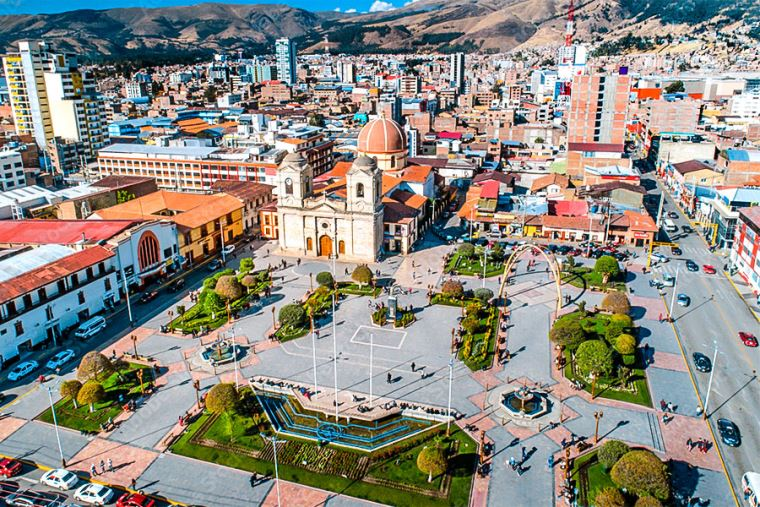
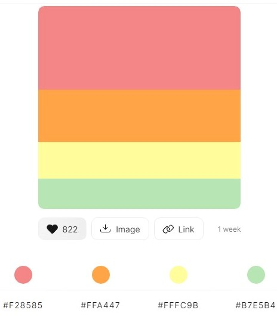
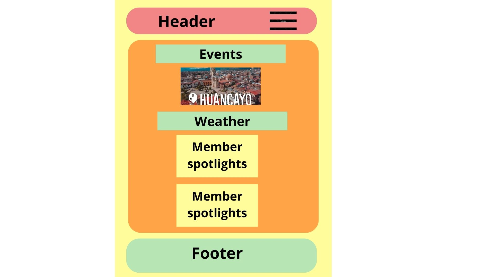
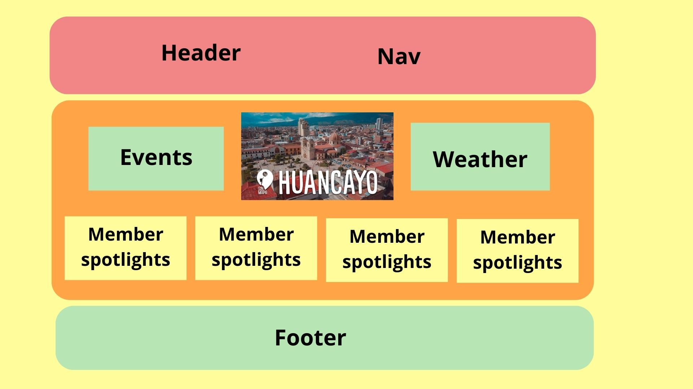

Site Name
Huancayo Chamber of Commerce
Site Purpose
- The Huancayo Chamber of Commerse aims to foster economic growth and development by providing a platform for local businesses to connect, collaborate, and network. Through organized events, workshops, and business forums, the Chamber will facilitate the exchange of ideas, resources, and opportunities.
- The Huancayo Chamber of Commerce will play a pivotal role in promoting economic literacy and community engagement. Through educational programs, seminars, and outreach activities, the Chamber will empower local entrepreneurs and residents with the knowledge and skills necessary for economic success. Additionally, the Chamber will collaborate with educational institutions to support skill development, fostering a more knowledgeable and skilled workforce in Huancayo.
Scenarios
- How can my business benefit from joining the Chamber?
- What initiatives does the Chamber have to support local economic development?
- How does the Chamber advocate for businesses in the region?
- What networking opportunities does the chamber provide?
- Can you provide examples of successful business stories facilitated by the chamber?
Color Schema
My color palette will be #F28585 #FFA447 #F28585 #B7E5B4
 Color Palette LinkThis is h2
This is h3
This is a paragraph
Typography
For titles and headings
For subtitles
For paragraph
Wireframe
Mobile View
Larger view
